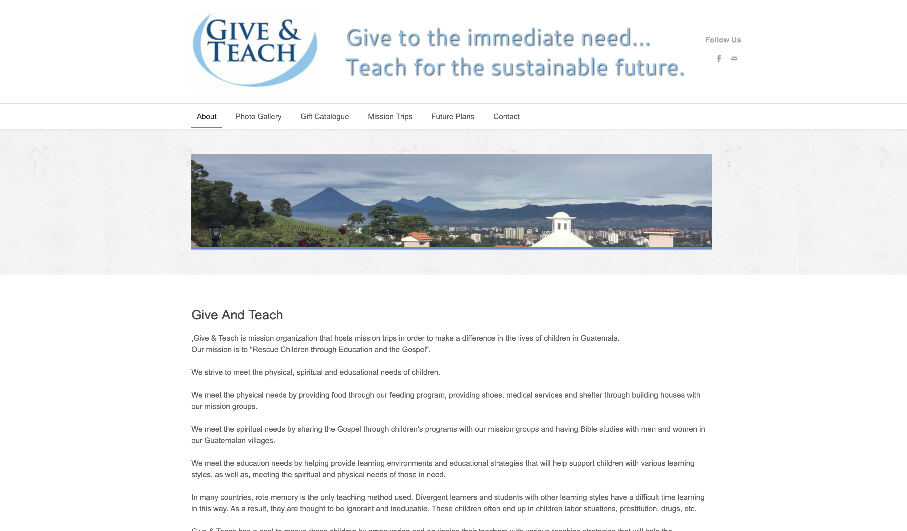
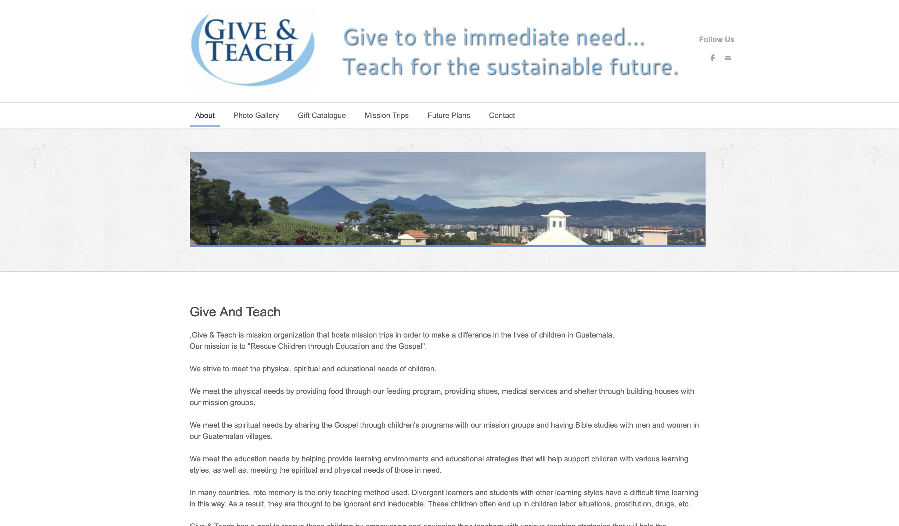

Research
Give and Teach is an organization dedicated to helping children in underprivledged villages in Guatemala.
Give and Teach's website is very outdated and in need of some design help. They have a lot of pictures available, but of poor quality. They have several tabs in their website; About, Photo Gallery, Gift Catalogue, Mission Trips, Future Plans, and Contact.
Give and Teach's motto is "Give to the immediate need...Teach for the sustainable future."
Give and Teach is currently in the process of making a new Community Center in El Pino, Santa Rosa, Guatemala. Here are some of the things they are currently raising money for and fighting for:
The Need:
Guatemala has the highest illiteracy rate in all of Central America. Village schools often have over 40 children per classroom with little or no resources. Numerous men, women and children contract intestinal and other diseases due to unclean water. Many men and women lack the skills and education to be able to provide for their family. Countless children in the villages of Guatemala suffer from malnutrition.
The Vision:
After purchasing approximately five acres in the Village of El Pino in the Department of Santa Rosa (about an hour and fifteen minutes southeast of Guatemala City, Guatemala) a master plan has been developed to meet the needs of the community. This Community Center will feature: a medical and dental clinic, counseling services, an elementary school which will also serve as a training center for Guatemalan teachers to help improve the teaching methods and techniques in the public schools, a vocational training center that will provide men and women skills they need to secure better jobs and stimulate the local economy, a children’s home to care and provide for children in need and to provide community access to clean water to promote better health, group housing to host volunteers that will build homes for needy families, help promote micro businesses such as hen houses as well has helping with other needs of the poor.
Give and Teach Website
Give and Teach has a website, however it is very dated, unorganized, and lacks any real hierarchy. There logo is dates as well, and some of there font has a shadow effect that is very unprofessional. The pictures that they use are mostly very low quality and in need of being updated.
 


Give and Teach Facebook
Give and Teach has a Facebook, however, there are very few pictures and posts on it, and it is very dated as well. There are very few posts and not a lot of information is provided. Their last post was from 2012.

Give and Teach: Research Continued
Give and Teach does not have any other social media platforms, however, individuals that have worked with them often use the hashtag #giveandteach which is another source of photos and information.
This organization does not have any other brochures, documents, websites, or means of marketing themselves that I was able to find.

Secondary Research
Explore the most recent news in your client's field. Use the Internet, newspapers, magazines, or journals to know what’s new. This can be news stories of interest, relevant scientific research, or anything that could help you in finding a solution to the design challenge.
Guatemala has a five-tier system of education starting with primary school, followed by secondary school and tertiary education, depending on the level of technical training. 74.5% of the population age 15 and over is literate, the lowest literacy rate in Central America.
Another reason education is so limited in Guatemala is because of price. High school in Guatemala is expensive. It costs between $600 and $1,200 per year. CasaSito eases this economic burden for families by providing partial scholarships to youth living in extreme poverty. Education is only free and compulsory for six years. Most schools are private schools and are only attended by wealthy upperclass citizens.
Some private schools will donate old uniforms and supplies to the underprivledged villages, however, if they donate their uniforms, the uniforms must be donated to villages several hours away because the private schools do not want lower class children wearing their brand or school logo.
Another issue that I found in my research is that even when children do attend school, the quality of education they receive is very low. The classroom environment is chaotic. Kids are often off-task and bored. Teachers look overwhelmed and unprepared. According to one researcher, this is in part due to poor quality teachers, a lack of resources, and a lack of Spanish-language books.
According to one source that I found, a main issue is the fact that there are very few teachers and the ones that are there are underqualified. Most teachers in Guatemalan primary schools have only a high school-level education and no exposure to best practices in child development and literacy instruction. Once in the classroom, they are isolated and receive almost no support. They fight a daily battle to provide the structured learning environment their students need most.
Try to find recent innovations in your client's particular area. They could be technological, behavioral, or cultural.
One organization, Child's Aid, is working to improve the education crisis in Guatemala as well. Studies show the best way to close the learning gap and improve student outcomes is to improve the quality of teaching. And high-quality training with sustained, personalized coaching is the most effective way to help teachers gain the knowledge and skills they need to improve their instruction. Child Aid’s innovative literacy program focuses on transforming how reading and literacy are taught in Guatemalan classrooms. We support systemic change that benefits children for generations, and we do this by giving teachers the training, support and resources they need. In Child Aid classrooms, books fill colorful reading corners. Teachers lead read-aloud sessions, ask questions and use techniques that help all students learn. Kids raise their hands, read out loud, participate and share ideas. Children become independent and confident learners.
Child's Aid is accomplishing this through a process of training teachers, one-on-one coaching, providing books, and creating a culture of reading.
To learn more about Child's Aid and the work they are doing, go to https://child-aid.org/our-solution-literacy-program/
There have been several other educational reforms in Guatemala recently.
The School of Hope:
Located in Jocotenango, Guatemala, the School of Hope has been working to improve access to education, food, health and social services since 2003. Its goal is to inspire and empower future generations with the skills necessary to be successful. The school’s founder, Sophie McKee, became inspired by a documentary to create the school. Currently, The School of Hope reaches 702 students and 385 families.
The School of Hope also partners with many organizations to assist with a wholesome, out of classroom experience for its students. The Garden of Hope hosts an after-school garden program, teaching students about agriculture in a safe, green space. The school also partners with Rekko 8, which provides extended health services at a discounted rate for families of students. In addition to resources for therapy, women’s groups for mothers of students and leadership groups for women, the school also partners with WINGS and Abbott. These two programs are geared towards training teachers and subsequently students in sexual and reproductive health.
Education and Hope:
In the hilly rugged terrain of Guatemala’s second-largest city, Quetzaltenango, lies Education and Hope. Education and Hope was founded on the basis that education is a basic fundamental human right that all of the world’s children deserve. Through education, social well-being, after school programs and healthcare, the organization created a refuge where children can grow. By educating today’s children, Education and Hope empowers the next generation to combat poverty.
Students receive backpacks with school supplies, shoes, a uniform and bus fare. Additionally, students accept scholarships based on economic need; in 2017, Education and Hope gave out 205 scholarships to students in need. In addition to tutoring, the school’s after-school program provides a connection to mental health specialists, an infirmary, two meals and showers for those who do not have access at home. Ninety-nine children benefitted from Education and Hope’s after-school program in 2017. Finally, the school runs the Hope Center where students and families have access to a monthly food pantry, grants for home improvements and loans for medical emergencies.
Niños de Guatemala:
The inspiration for Marten Dresen to build Niños de Guatemala originated in 2006 when he traveled “to Guatemala to learn Spanish and volunteer.” There, he met a girl named Mirna, who never wore shoes. Before leaving, Dresen gifted Mirna with a pair of shoes, which motivated him to give to Guatemalans in need. From this dream, Dresen built the first Niños de Guatemala school in 2009 with his partners Sander and Annemiek Wirken.
Today, the outskirts of Antigua, Guatemala host three Niños de Guatemala schools. Every year, the organization serves around 500 low-income students. The core of the school’s educational program is to provide students with both the necessary educational and life skills to flourish. Like the School of Hope and Education and Hope, Niños de Guatemala also offers family support, nutrition and health programs.
Continued efforts from the School of Hope, Education and Hope and Niños de Guatemala, help increase education and opportunity for more students in Guatemala. Education initiatives in Guatemala have the potential to drastically and dramatically improve for students and families alike. The onus is on those who find themselves well off enough to help give back and make a difference. These three schools provide much more than education; they provide hope and opportunity for those who would otherwise be without. Only together, united towards one common goal to improve education initiatives in Guatemala, can thousands thrive.
All of these organizations are trying to accomplish what Give and Teach is fighting for as well. To provide education and basic needs to underpriveledged children in the rural areas of Guatemala. The probelms arise when there is a lack of funding, a lack of support from the government, and a lack of help from parents who are also uneducated and do not understand the importance of it. I can use these organizations as inspiration for my website, and use some of their successful methods to help Give and Teach be as successful as possible.
Take a look at other solutions in your area. Which ones worked? Which ones didn’t? Are there any that feel similar to what you might design? Any solutions that have inspired you to make one of your own?
In order for education to improve in Guatemala, there must be changes, from government regulations to how parents and society view education. Organizations like Give and Teach can not change the government, but they can start educating locals in the areas they work in about the importance of education.
I found one document explaining how to get parents more involved in their childrens education. This document was aimed more towards families in the United States, but some of the same principles can be applied. Some of the things Give and Teach can emphasize is to communicate with local teachers, ask parents to demonstrate a positive attitude about education at home, encourage reading, ask parents to help with the homework process, host school events with food and activities to gey families involved, provide jobs at the school for parents who do not work; such as custodial staff positions.
It is hard to apply solutions that worked in the states regarding education to problems that Guatemala is having just because of the very different cultures and ways that the government operates. Nothing from the Carolinas or even the United States can really be applied to how I might design a website for an organization trying to provide basic needs and education to a third world country. However, I have felt inspired to create a website and offer some solutions to Give and Teach so that they might have more success in creating a better environment for these children to learn.
Is there any market data that you can dig up that may be relevant in helping you solve the design challenge?
I was able to find a lot of data on what the different levels of education are like in Guatemala. They proviced a grading scale as well.
Primary Education:
Although the first 6 years of basic education are theoretically free and mandatory, the truth is that outside cities even primary schools are scarce especially in rural indigenous areas. There, religious institutions are often the only filler in the gap. Villages located in mountain towns and in very rural areas either do not have access to schools or have to help their families with chores and with making money, so school is not always available.
Middle Education:
The first 3 years of secondary education known as basico are similar to junior high school elsewhere and provide pupils with a spread of subjects aimed at preparing them for the widest range of working roles.
Secondary Education:
The final 3 years of school education at secondary school called diversificado are more specialized. At state schools most students study either teaching or bookkeeping. Their range of choice at private secondary schools is much improved, for there agronomy, auto-mechanics, computers, secretarial services and tourism may be taught as well.
Vocational Education:
The objectives of the Guatemala vocational education system are to teach people new skills in under-employed areas that can help them build a better life. Hope remains a neglected commodity for many, although progress continues to be slowly made.
Tertiary Education:
The oldest university in Guatemala (and the only state university) is the Universidad de San Carlos de Guatemala. It was founded in 1652 by a catholic priest, but only officially decreed in 1676 by King Charles II of Spain. There are in addition 11 other private universities most note-worthily Universidad Rafael Landivar and Universidad Fransisco Marroquin. These are complemented by a variety of technical and teacher training colleges.